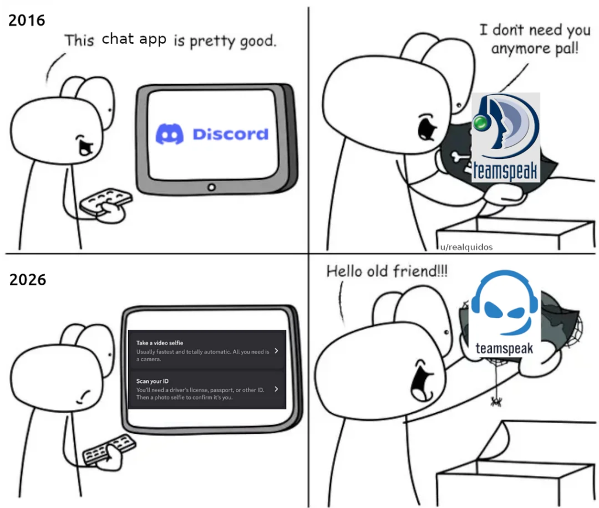

Discord, escaneamento facial e o modo 'teen'
O Discord deu o últimato: todo usuário vai ter que verificar a sua idade escaneando o rosto, mandando documento de identidade ou tendo seus hábitos analisados. Vamos falar sobre.
A implementação, que começa no início de março, tornará as configurações apropriadas para adolescentes o padrão para todos os usuários, com os adultos precisando verificar sua idade para flexibilizar proteções, incluindo filtros de conteúdo e proibições de mensagens diretas, disse a empresa.
A plataforma sediada em São Francisco, popular entre jogadores, utilizará tecnologia de estimativa de idade facial e verificação de identidade por meio de parceiros fornecedores para determinar a idade dos usuários. Um software de rastreamento executado em segundo plano também ajudará a determinar a idade dos usuários sem a necessidade de verificação direta em todos os casos.
https://discord.com/safety/how-discord-is-building-safer-experiences-for-teens
-
Antes da gente mergulhar no assunto vamos diferenciar alguns diferentes aspectos:
- Proteção de crianças e adolescentes na internet
- Divisão da internet por idades
- Escaneamento facial como uma ferramenta de estimação da idade
- Coleta e vazamento de dados
-
Eu vou deixar alguns vídeos no linkados no final (do roteiro e desse vídeo) que falam um pouco sobre diferentes aspectos
-
Grande parte dos artigos e postagens que vocês lerem podem ter informações desencontradas por que o Discord foi propositalmente vago nos anúncios
-
O que eles disseram no seu segundo comunicado e atualização da política:
- O Discord não exige que todos realizem uma verificação facial ou enviem um documento de identidade para usar o aplicativo.
- A maioria das pessoas pode continuar usando o Discord exatamente como usa hoje, sem nunca passar por verificação de idade.
...
Para a maior parte dos usuários maiores de idade, podemos confirmar sua faixa etária com informações que já temos. Usamos meios de predição de idade para determinar, com grande confiabilidade, quando o usuário é adulto. Isso permite que muitos adultos acessem recursos adequados à idade sem passarem por verificação explícita.
Quando são necessárias mais informações, oferecemos opções focadas em privacidade com o apoio de parceiros confiáveis.
- As verificações faciais nunca saem do seu dispositivo. O Discord e nossos parceiros comerciais nunca as recebem.
- Os documentos de identidade são usados somente para fornecer sua idade e excluídos.
- O Discord só recebe sua idade e nada mais. Sua identidade nunca é associada à sua conta.
-
Quem irá fazer essa verificação? Uma empresa chamada k-ID que atua junto à Meta em alguns países. Porém eles já anunciaram que vão usar em alguns lugares a Persona
- Talvez vocês se lembrem que é a empresa do Peter Thiel, ironicamente o vampiro desgraçado associado ao pedófilo mór desgraçado Jeffrey Epstein
-
Obviamente todos acontecimentos dos últimos dias tem deixado a comunidade muito puta e já crescem os chamados pelo boicote e migração para outra plataforma. Vamos voltar nisso mais tarde.
-
E pra coroar a situação isso tudo acontece apenas alguns meses depois desse vazamento escandaloso de 70 mil (segundo o discord) documentos de clientes do Discord
https://arstechnica.com/security/2025/10/discord-says-hackers-stole-government-ids-of-70000-users/
- É uma regra que não falha: se os seus dados estão guardados numa plataforma de terceiros eles eventualmente vão vazar ou serão vendidos
Como isso é bom pro modelo de negócios do Discord?
- Vocês já sabem que as intenções do Discord não são totalmente puras e em defesa das crianças, embora a gente tenha que deixar claro que a plataforma tem diversos problemas com isso e absolutamente é necessário haver algum tipo de medida dessa forma.
https://canaltech.com.br/mercado/discord-se-prepara-para-abrir-o-capital-mas-no-sigilo/
- Provavelmente nos próximos meses o Discord irá abrir o seu capital em busca de mais investimentos e essa medida pode valorizar muito o passe da empresa
- Cada conta presente na plataforma se associada com dados de indentificação, idade e todo tipo de perfil pode valer muito mais do que apenas 'zezinho123' sem nenhum metadado ligado à conta
- Isso também é mais um aviso sobre as intenções da empresa e o futuro, não muito promissor, da plataforma
Por que o Discord é uma ferramenta tão útil?
-
O Discord conseguiu convergir para uma mistura de bate papo, fórum, áudio / vídeo em tempo real e ferramenta de organização de comunidade muito útil
-
O Discord não é uma rede social nos moldes da internet aberta, existe uma proximidade maior entre as pessoas e uma expectativa de privacidade maior. Isso tem suas vantagens e desvantagens (outra coisa pra falar mais tarde)
-
Ironicamente muitas pessoas usam o Discord para organizar grupos de trabalho, ao invés de um Slack por exemplo, por ser uma plataforma menos corporativa e mais amigável para quem é mais 'power user' de computador
-
Ironicamente [2] agora adultos terão que mandar os seus documentos, perfis e biometria facial para usar uma plataforma onde crianças estão 24/7 trabalhando em maneiras de burlar essas medidas
Maneiras de burlar...
- Uma pergunta que fica é por que o reconhecimento facial é a escolha usada pela maioria das plataformas?
Recorrer ao reconhecimento facial e a outras tecnologias visa solucionar o problema da falta de confiabilidade da idade autodeclarada, com menores mentindo rotineiramente sobre suas datas de nascimento para burlar as medidas de segurança das plataformas.
https://github.com/promptpirate-x/discord-id-bypass-tool
https://www.glitched.online/death-stranding-selfies-are-being-used-to-bypass-uk-age-verifications/
- Criança verificando no Roblox com 106 anos https://www.instagram.com/reels/DTvh6AlD8vS/
- É programa especializado, é Death Stranding, é foto dos pais, fotos dos outros, foto gerada com IA, é pintar a cara e etc...
- Considerando a taxa de erros dessas ferramentas e os riscos associados à geração dos dados de biometria, não parece sensato achar que as crianças não vão burlar essas medidas mesmo assim.
- Inclusive aumenta o risco de irem para plataformas com nenhuma moderação ou ferramentas para mitigar os riscos associados ao uso
- Alguém vai falar da ironia de exigir que crianças mandem fotos ou documentos seus pela internet para garantir a sua segurança?
Êxodo do Discord
-
Algo engraçado é que o Discord está subestimando demais o quanto as pessoas dependem desse tipo de espaço. Realmente existem grandes comunidades, empresas e associações que estão usando eles, mas cara... a gente já passou por isso algumas vezes.
-
Esse tipo de ferramenta tem um ciclo de vida e adoção muito ligado à ascensão e queda das outras plataformas e ao 'network effect' que é traduzido como 'eu vou onde estiverem todos meus amigos'. Esse tipo de mudança é geralmente o tipo de coisa que gera êxodos de plataformas
-
Usar esse espaço para falar como o Discord, mal usado e é muito mal usado por aí, se torna um grande desserviço para internet
O que fazer?
- Não dê grana para o Discord. Cancele nitro se você tem, se tiver como botar um motivo diga que é por causa dessa decisão deles.
- Informe suas comunidades sobre o assunto e crie regras que evitam o uso de escaneamento facial
- Trabalhe num plano de backup e eventual saída do Discord

Soluções concorrentes:
-
Teamspeak https://www.teamspeak.com
-
Stoat (antigo Revolt) https://stoat.chat/
-
Spacebar (antigo fosscord) https://github.com/spacebarchat/spacebarchat/
-
Matrix https://matrix.org/
-
Rocketchat https://www.rocket.chat/
-
XMPP e clientes mais modernos
-
Plataformas no Fediverso
-
Se estivermos falando de texto e chat junto com outras soluções de áudio e vídeo aí temos vários coisas pra usar como: Mumble, Jitsi e Bigbluebutton como áudio/video e outras soluções de fórum ou chat para o resto (dá até para pensar num Nextcloud)
- WhatsApp, Telegram, Signal ...
- Imaginem alguma maluquice como o Anytype por ex. (isso é só uma pira minha)
Software livre e aberto, auto hospedagem e etc...
- O problema que temos agora é a velha merdificação que chega na porta de toda plataforma, então autohospedar os seus softwares e buscar alternativas livres/abertas é uma boa opção. Porém difícil
- O interesse nesse tipo de solução e as contribuições e financiamento pra essas plataformas vão explodir agora.
- Pra quem sempre fala de contribuir e procura projetos para trabalhar junto com uma comunidade isso aqui é uma boa pedida.